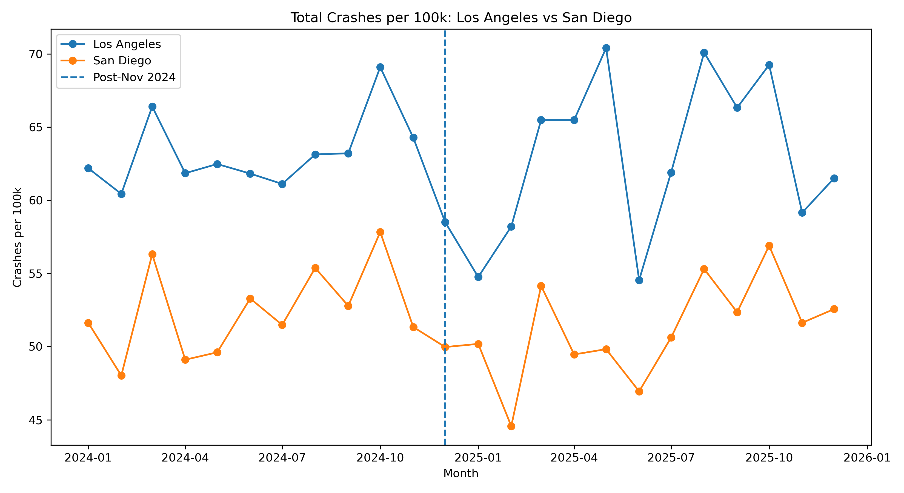
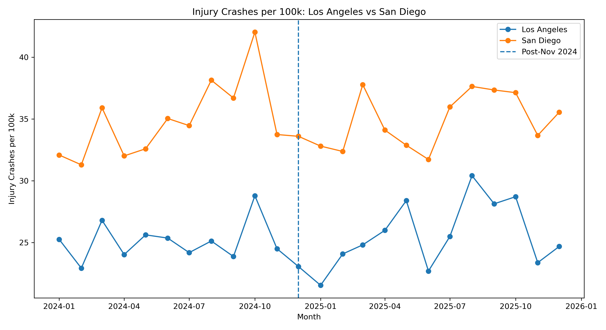

Visual Analysis
San Francisco vs Oakland
Total Crashes per 100k
.png)
Injury Crashes per 100k
.png)
Causal Inference Case Study
Evaluated whether Waymo autonomous vehicle expansion was associated with measurable changes in city-level crash outcomes across California cities.
Business Question
Autonomous vehicle technology is often positioned as a way to reduce human driving error and improve road safety. However, city-level safety outcomes are influenced by many factors, including traffic volume, tourism, enforcement, infrastructure, and local driving behavior.
This project used California crash data to evaluate whether Waymo expansion was associated with measurable changes in crash rates in treatment cities compared to similar control cities.
Methodology
San Francisco and Los Angeles were treated as cities where Waymo expansion occurred.
Oakland and San Diego were used as comparison cities to help isolate broader crash trends.
Total crashes, injury crashes, night crashes, and weekend-night crashes were measured on a monthly basis.
Crash outcomes were converted into rates per 100,000 residents to make cities more comparable.
Visual Analysis
Visual Analysis


Model Validation
Before estimating the treatment effect, I evaluated whether treatment and control cities followed similar pre-treatment trends. This step is important because Difference-in-Differences relies on the assumption that the treatment and control groups would have moved similarly without the intervention.
For the San Francisco vs Oakland comparison, the pre-trend interaction term was not statistically significant, suggesting that the two cities followed reasonably similar crash-rate trajectories before the post-period.
Difference-in-Differences Results
Estimated change in Los Angeles crashes per 100k after Waymo expansion relative to San Diego.
DID p-value for the LA vs San Diego total crash model, meaning the estimate was not statistically significant.
Monthly city-level observations used in the Los Angeles vs San Diego DID model.
Key Findings
The analysis did not find strong statistical evidence that Waymo expansion reduced overall crash rates during the study period.
Some cities showed stable patterns while others fluctuated month to month, making it difficult to attribute changes solely to autonomous vehicle deployment.
Crash outcomes are influenced by traffic volume, commuting patterns, tourism, enforcement, infrastructure, and broader mobility trends.
Interpretation
The results suggest that Waymo expansion did not produce an immediate, statistically significant reduction in total crash rates at the city level during the study period.
This does not mean autonomous vehicles have no safety benefit. Instead, it means that city-level crash data may not show a clear short-term effect because crash outcomes are affected by many overlapping factors. A more granular analysis using vehicle miles traveled, route-level exposure, incident severity, and autonomous vehicle operating zones would be needed for stronger causal conclusions.
Business & Policy Value
This project demonstrates how causal inference can be used to evaluate emerging technologies when randomized experiments are not available.
The same framework can be applied to transportation pilots, public policy rollouts, operational changes, pricing experiments, and business interventions where analysts need to compare outcomes before and after implementation.
Tools Used